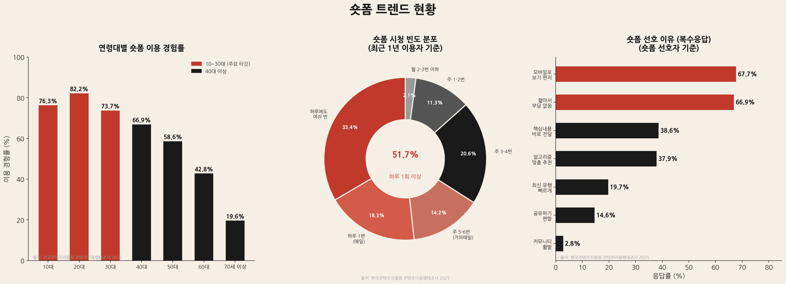
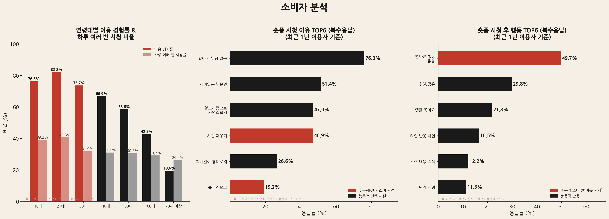

PLANNING ARCHIVE : RITUAL LAB
현대적 선비의 삶 — THE MODERN SEONBI
현대인의 일상은 숏폼 콘텐츠에 의해 조각나 있습니다. 무의식적인 스크롤과 짧고 강렬한 자극은 '도파민 중독'을 넘어 일상적인 번아웃을 초래하고 있습니다. 우리는 이 현상을 통계적으로 분석하여 기획의 당위성을 확보했습니다.

통계 분석: 전 연령대에서 70% 이상의 높은 숏폼 이용률을 보이며, 특히 이용자의 51.7%가 하루 1회 이상 시청하는 '일상적 중독' 단계에 진입했음을 보여줍니다. 이는 숏폼이 단순한 유흥을 넘어 피할 수 없는 생활 환경이 되었음을 시사합니다.
"소비는 이제 제품을 넘어 경험과 정체성을 구매하는 행위입니다."
단순한 시청을 넘어 오감을 자극하는 체험이 브랜드 로열티를 결정합니다. 우리는 소비자가 숏폼을 시청한 후 느끼는 '공허함'을 분석하여, 이를 채워줄 리츄얼의 필요성을 도출했습니다.

통계 분석: 숏폼 시청 이유 중 '시간 때우기(46.9%)'와 '습관적 시청(19.2%)'의 비중이 높게 나타납니다. 특히 시청 후 별다른 행동을 하지 않는 비율이 49.7%에 달하는 것은, 현재의 콘텐츠 소비가 능동적 즐거움보다는 수동적이고 공허한 시간 소비에 치중되어 있음을 증명합니다.
일상 공간을 '정적 몰입'의 장소로 재설계하여 오감을 자극합니다.
15초의 챌린지를 통해 '정적인 힙함'을 SNS 트렌드로 확산시킵니다.
체험의 경험을 굿즈로 소유하게 함으로써 지속 가능성을 확보합니다.
어지러운 책상을 정리하고 바르게 앉아 나를 정돈하는 타임랩스.
단정한 잔에 차를 따르며 가야금 Lo-fi 비트에 몰입하는 시간.
스마트폰을 끄고 창밖 풍경을 5초간 온전히 빌려오는 미학.
본 기획은 한국 문화의 '풍류'를 현대인의 결핍을 채워주는 실질적인 문화 콘텐츠 모델로 제안합니다. 이는 지속 가능한 문화 경제 구조를 형성하는 첫걸음이 될 것입니다.